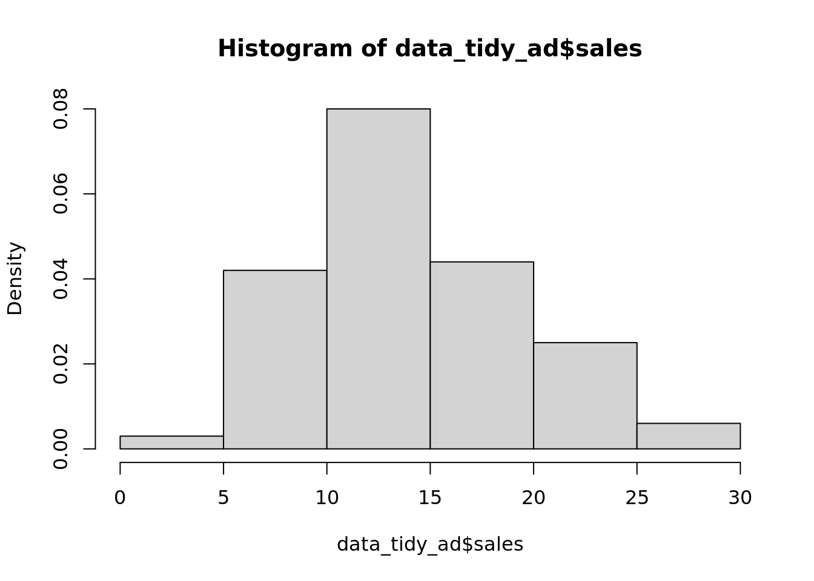
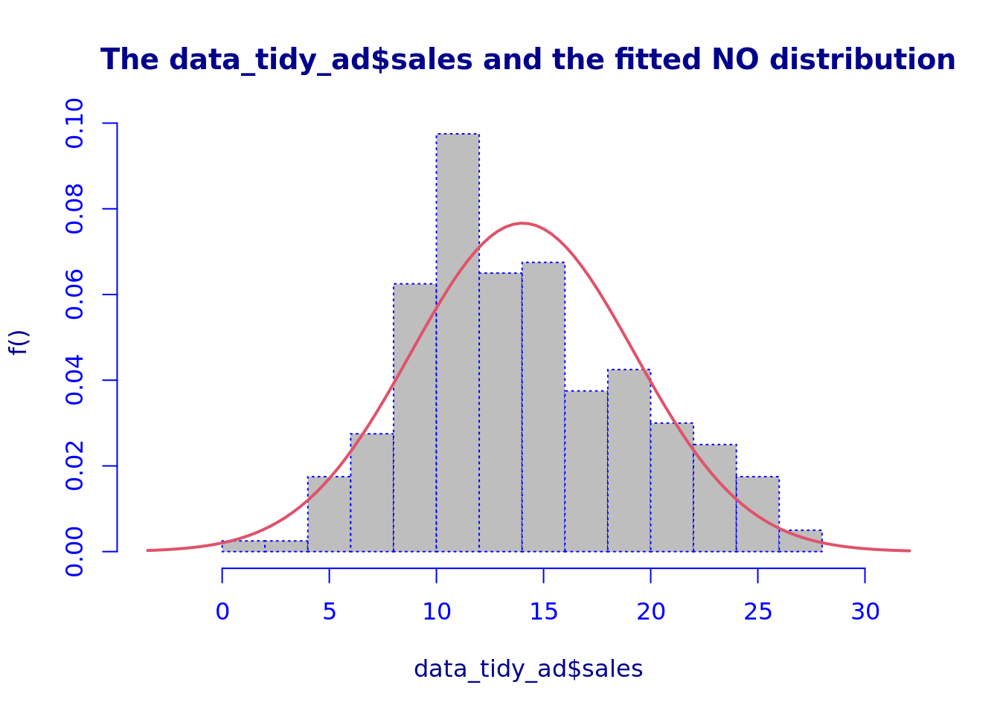
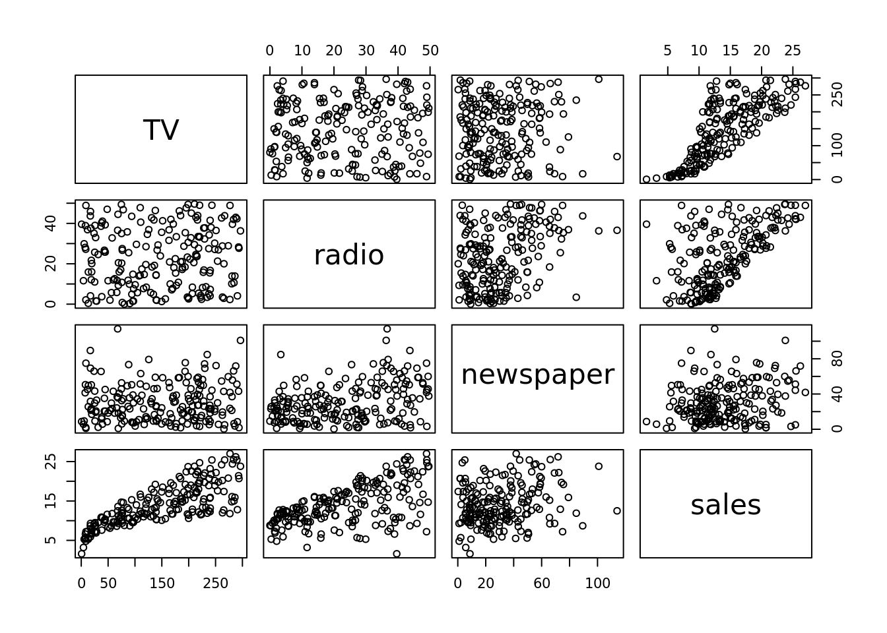
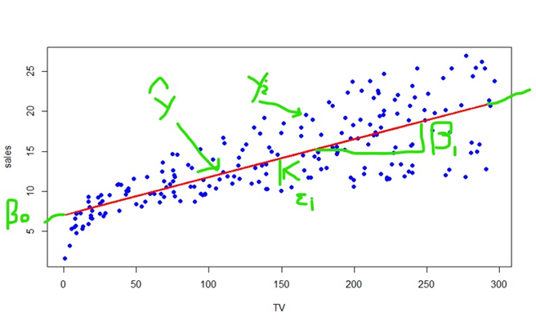

library(tibble)
library(dplyr)
library(gamlss)Introductory example of linear regression
Problem statement
Suppose that you’re a business analyst tasked with helping the executives decide how to advertise.
You’ve gathered annual data across 200 markets in terms of sales revenue and advertising spend on TV, radio and newspaper. Your boss has heard about “regression”, and wants to see if it can be more informative than simply understanding that more advertising leads to more sales.
Set-up
First we attach R packages we need, which make useful functions available:
Indicating code in an Rmd/qmd
- How do I indicate code in an
Rmd?- By “fencing” it
- What does that mean?
- Putting
{r} before the code andafter the code
- Putting
- What is another name for the tick things?
- Back ticks
- Where is it on the keyboard?
- Top left (next to one)
- What do I put in between the fences?
- Code!
Attaching packages
In R, a package is a collection of functions that extend the functionality of R. In R, a library is a actually a folder where packages are installed (e.g. the output from .libPaths()).
Somewhat confusingly, the library function is used to attach a package into the current R session. For example, the package tibble provides the as_tibble function. If I run as_tibble without attaching the tibble package, I get the error that as_tibble function is not found. But if I first run library(tibble) and then run as_tibble, it works. Another option would be to not run library(tibble), but instead directly reference the tibble package when using the as_tibble function, like so: tibble::as_tibble (note the double semi-colons).
Some languages do not allow you to attach libraries in the way R does. I prefer not attaching packages, but typical practice in the R community is to attach them. Since this is an introductory course, I’ll attach them.
If you are attaching them, then it’s good practice to attach them at the top of the script.
Naming datasets
- I like reading in naming data sets I’ve just read in
data_raw_<name>- Converting it to a
tibbleprevents too much information being printed to the console each time you print it
- Converting it to a
First we read our data in:
# Read in the raw data from the Advertising.csv file
data_raw_ad <- read.csv("_data_raw/Advertising.csv", header = TRUE)
# Convert the raw data to a tibble for easier manipulation
data_raw_ad <- as_tibble(data_raw_ad)Data exploration
In the real world, it’s important to examine the data first as the analytical techniques chosen will depend on the data itself.
- Since we’re interested in performing linear regression, we would like to assess upfront the following:
- Distribution of the response variable (hopefully normal)
- Relationship between repsonse and dependent variables (hopefully linear)
- Correlation between explanatory variables (hopefully absent)
- Once we’ve fitted the model, we can also be more sure that we haven’t made a mistake somewhere by the results matching what we see in preliminary data exploration.
# Print the first 10 rows of the data
data_raw_ad# A tibble: 200 × 5
X TV radio newspaper sales
<int> <dbl> <dbl> <dbl> <dbl>
1 1 230. 37.8 69.2 22.1
2 2 44.5 39.3 45.1 10.4
3 3 17.2 45.9 69.3 9.3
4 4 152. 41.3 58.5 18.5
5 5 181. 10.8 58.4 12.9
6 6 8.7 48.9 75 7.2
7 7 57.5 32.8 23.5 11.8
8 8 120. 19.6 11.6 13.2
9 9 8.6 2.1 1 4.8
10 10 200. 2.6 21.2 10.6
# ℹ 190 more rowsWe’ll consider a linear regression analysis.
We see that one column, X, is just the row number. So we delete it, yielding our analysis-ready dataset:
data_tidy_ad <- data_raw_ad |>
dplyr::select(-X)
data_tidy_ad[1, ]# A tibble: 1 × 4
TV radio newspaper sales
<dbl> <dbl> <dbl> <dbl>
1 230. 37.8 69.2 22.1Pipe operator
- The pipe operator,
|>, simplifies writing long chains of functions.- For example,
f(g(h(x))is equivalent tof() |> g() |> h()x. - This might seem particularly advantageous here, but when
f,gandhall have multiple arguments, having them on different lines is very helpful.
- For example,
The tidyverse
- The two packages I’ve used so far,
tibbleanddplyr, are part of thetidyverse.- The
tidyverseis a collection of packages that share a common philosophy of data manipulation. - The
tidyverseis very popular in theRcommunity, and is a good place to start. - The book
R for Data Scienceis a good introduction to thetidyverse.
- The
Distribution of response variable
First we’ll examine the distribution of the sales response variable, which will be our dependent variable, to assess whether a normal distribution might be appropriate:
hist(data_tidy_ad$sales, freq = FALSE)
histDist(data_tidy_ad$sales, family = NO)
Family: c("NO", "Normal")
Fitting method: "nlminb"
Call: gamlssML(formula = data_tidy_ad$sales, family = "NO")
Mu Coefficients:
[1] 14.02
Sigma Coefficients:
[1] 1.65
Degrees of Freedom for the fit: 2 Residual Deg. of Freedom 198
Global Deviance: 1227.38
AIC: 1231.38
SBC: 1237.97 It seems approximately normally distributed, if positively skewed.
It’s important to note that the model only requires that the response variable be conditionally normally distributed, which we can’t assess until we’ve fit the model. But what we see thus far seems encouraging.
Correlation between explanatory variables
The effects of explanatory variables are hard to isolate when they are highly correlated with one another. So we’ll examine their correlation:
cor(data_tidy_ad |> dplyr::select(radio:sales)) |> signif(2) radio newspaper sales
radio 1.00 0.35 0.58
newspaper 0.35 1.00 0.23
sales 0.58 0.23 1.00They are all very low.
Graphs could highlight non-linear relationships not captured by the correlation statistics, as well as indicate outlying observations:
pairs(data_tidy_ad)
The explanatory variables also look uncorrelated. A few possible outliers, but nothing dramatic.
Sales definitely seems to depend on TV and radio spending, but less so on newspaper spending.
So, overall, we’re happy that we’ll be able fit a linear model.
Modelling sales against TV
So, let’s just model sales against TV spending first.
In this case, we assume that \(Y_i=\beta_0 + \beta_{\mathrm{TV}}X_{i,\mathrm{TV}}+\epsilon_i\), where \(\epsilon_i\sim N(0,\sigma^2)\).
Fitting the model
We fit the model using the lm function, which finds values for \(\beta_0\), \(\beta_{\mathrm{TV}}\) and \(\sigma^2\) that best fit the data:
fit_tv <- lm(sales ~ TV, data = data_tidy_ad)Simply printing the model output displays the model structure and the estimated regression coefficients (\(\beta_0\) and \(\beta_{\mathrm{TV}}\)):
fit_tv
Call:
lm(formula = sales ~ TV, data = data_tidy_ad)
Coefficients:
(Intercept) TV
7.03259 0.04754 Examining the model output
However, if we want to find out what the effect of TV on sales is (the estimate), how accurate that estimate is (the estimate’s standard error) and how compatible the data are with no effect (the p-value), we’ll need to use the summary function on the fitted model object to generate extra statistics and estimates:
Estimates
summary(fit_tv)
Call:
lm(formula = sales ~ TV, data = data_tidy_ad)
Residuals:
Min 1Q Median 3Q Max
-8.3860 -1.9545 -0.1913 2.0671 7.2124
Coefficients:
Estimate Std. Error t value Pr(>|t|)
(Intercept) 7.032594 0.457843 15.36 <2e-16 ***
TV 0.047537 0.002691 17.67 <2e-16 ***
---
Signif. codes: 0 '***' 0.001 '**' 0.01 '*' 0.05 '.' 0.1 ' ' 1
Residual standard error: 3.259 on 198 degrees of freedom
Multiple R-squared: 0.6119, Adjusted R-squared: 0.6099
F-statistic: 312.1 on 1 and 198 DF, p-value: < 2.2e-16As we can see, each one unit increase in TV spending increases sales by 0.047. - The 95% confidence interval for this effect is roughly (0.042, 0.052), which is probably precise enough, given the purpose. - The p-value is minute.
The plot below displays some of the key quantities associated with the data and the model:

- \(\beta_0\): mean sales when TV spending is zero
- \(\beta_1\): The per-unit increase in mean sales for each unit increase in TV spending
- \(y_i\): The response value for the \(i\)-th observation
- \(\hat{y}_i\): The fitted value for the \(i\)-th observation
- \(\epsilon_i\): The residual for the \(i\)-th observation (different between actual and fitted response value, i.e. \(y_i-\hat{y}_i\))
Fitted values and residuals
By virtue of fitting the model, we’ve described a way for relating any value of TV spending to average sales.
For example, if someone spends 100 on TV advertising, we can predict that their average sales will be:
coef_vec <- coefficients(fit_tv) |> setNames(NULL)
beta_0 <- coef_vec[1]
beta_1 <- coef_vec[2]
round(beta_0 + beta_1 * 100, 1)[1] 11.8Modelling sales against TV, radio and newspaper
Now that we’ve examined sales against TV, let’s examine sales against all three explanatory variables.
In this case, we assume that \(Y_i=\beta_0 + \beta_{\mathrm{TV}}X_{i,\mathrm{TV}} + \beta_{\mathrm{R}}X_{i,\mathrm{R}} + \beta_{\mathrm{N}}X_{i,\mathrm{N}} +\epsilon_i\), where \(\epsilon_i\sim N(0,\sigma^2)\).
Fitting the model
We fit the model using the lm function as before, which finds optimal values for the unknowne parameters:
fit_all <- lm(sales ~ TV + radio + newspaper, data = data_tidy_ad)Examining the model output
Let’s examine the detailed inferential output from the summary function:
summary(fit_all)
Call:
lm(formula = sales ~ TV + radio + newspaper, data = data_tidy_ad)
Residuals:
Min 1Q Median 3Q Max
-8.8277 -0.8908 0.2418 1.1893 2.8292
Coefficients:
Estimate Std. Error t value Pr(>|t|)
(Intercept) 2.938889 0.311908 9.422 <2e-16 ***
TV 0.045765 0.001395 32.809 <2e-16 ***
radio 0.188530 0.008611 21.893 <2e-16 ***
newspaper -0.001037 0.005871 -0.177 0.86
---
Signif. codes: 0 '***' 0.001 '**' 0.01 '*' 0.05 '.' 0.1 ' ' 1
Residual standard error: 1.686 on 196 degrees of freedom
Multiple R-squared: 0.8972, Adjusted R-squared: 0.8956
F-statistic: 570.3 on 3 and 196 DF, p-value: < 2.2e-16- Radio spending clearly associated with sales, and newspaper spending not.
- There has been little change in the inference regarding the effect of TV advertising spend on sales.
- The only (subtle) change is that we now can confirm (in addition to the data exploration) that the effect of TV is not driven by an association between TV and radio.
Connection to future lessons
- Over the next few weeks, we will develop the mathematical and statistical theory to estimate the parameters and conduct inference regarding them.
- Once we’ve done that, we’ll actually have a flexible inferential tool we can make use of.